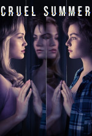
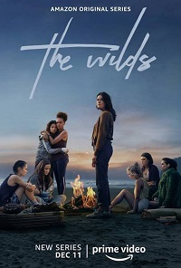

Series
-
Cruel Summer
Cruel Summer se ambienta a lo largo de tres veranos en la década de los 90, en el que una popular adolescente desaparece, haciendo que una chica sin aparente relación con ella, pase a ser la más popular de la ciudad.
 -
HomeComing
Homecoming es un drama que cuenta la historia de Heidi Bergman, una trabajadora de una agencia secreta gubernamental que ayuda a soldados a retomar su vida normal tras pasar varios años en la guerra.

-
Solos
Solos cuenta siete historias totalmente independientes que invitan a reflexionar al explorar el significado más profundo de la conexión humana a través de la visión única e individual de sus protagonistas.

-
The L Word
The L Word retrata la vida, las aventuras y desventuras de un grupo de mujeres lesbianas, sus amigas, familias y amantes, en Los Ángeles - Ciudad de West Hollywood, California.

-
The Wilds
Un grupo de adolescentes de diferentes orígenes debe luchar por la supervivencia después que un accidente de avión las dejó varadas en una isla desierta.

Películas
-
GreenLand
Una familia emprende un viaje para encontrar un refugio seguro cuando un gran cometa arremete contra la Tierra. A medida que el apocalipsis se acerca, la increíble travesía termina en una batalla para llegar a puerto seguro.